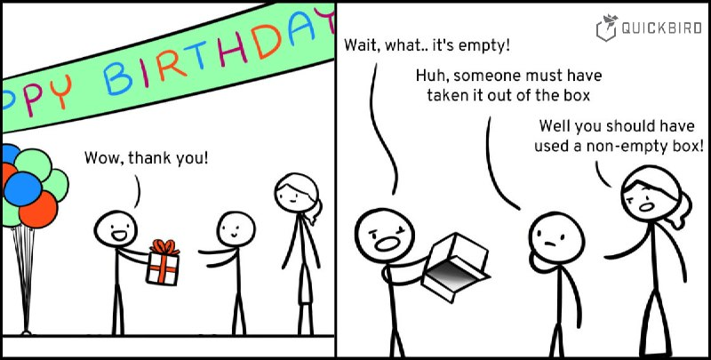

Как сделать непустой список в Kotlin?

Много думал... Плакал... В итоге подсмотрел элегантную идею здесь:
data class NonEmptyList<out T>(
val head: T,
val tail: List<T>,
) ...
head хранит обязательный первый элемент, а tail — все остальные. Если других
элементов нет, то tail задаётся пустым списком. Ловко!
Зачем оно такое надо? Бывают задачи где нам известно, что список будет содержать как минимум один элемент.
Тогда приводим список на границе нашего приложения к NonEmptyList (у нас по контракту такой
инвариант предполагается), чтобы далее не делать лишний десяток раз проверок вида:
val list: List<Any> = listOf(...)
...
val first: Any? = list.firstOrNull()
if (first != null) ...
// или, что ещё хуже, так:
val first = if (list.isEmpty()) throw ... else list.first()В тестах нужно будет обеспечить покрытием все эти ветвления! Можно, конечно, вовсе обойтись без проверок:
list.first() // под капотом NoSuchElementException
Тогда изменение контракта в будущем (пустой список) приведёт к непредсказуемому поведению в коде, так как
NoSuchElementException теперь возможен, но ни юнит ни интеграционных тестов у нас на него нет.
Сможете ли однозначно сказать, как это исключение повлияет на все бизнес-сценарии?
P.S. Очевидно, что работает описанный подход не только со списком. Если у значения есть важный инвариант,
зачастую его можно выразить отдельным, более конкретным типом: NonEmptyString,
Email, ...